C'est quoi le Web
aujourd'hui
Vocabulaire et contexte
Un peu d'histoire d'abord
Le web a une vingtaine d'année...seulement
Time Line Evolution du WebL'ère des pionniers et première guerre
1993 - 1998
- 1991 - 1992 : HTTP - HTML
- 1993 : Le CERN renonce aux droits d'auteur sur le WWW
- 1993 - 1997 : Mosaic (NCSA - Université de l'Illinois)
- 1994 : Yahoo
- 1995 : Netscape - Opéra - IE
- 1995 : SSL - Cookies - Javascript
- 1997 : Flash
- 1998 : AOL rachète Netscape
L'égémonie de Microsoft
1998 - 2003
- 1998 : Fondation de Mozilla (Netscape)
- 1998 : Google
- 1999 : HTML 4 - CSS2 - AJAX
- 2002 : Internet Explorer V.6
- 2003 : près de 90% de parts de marché à IE
- 2003 : Safari
Un nouvel espoir ;)
2003 - 2008
- 2001 - 2006 : Aucune mise à jour majeur d'IE6
- 2003 : Mozilla, 2004 : Firefox
- 2004 : Facebook
- 2005 : Opera mini
- 2007 : 1er Iphone ("un gadget pour geek fortunés")
- 2007 : Abandon XHTML 2 au W3C
Révolutions et nouvelle guerre
2008 - 2013
- 2008 - premier Draft HTML5
- 2008 - WCAG 2.0
- 2008 - Chrome V.1
- Nov. 2011 - Abandon de Flash sur mobile
- 2011 - WebGL
- 2012 - Windows 8
- 2013 - Firefox OS
C'est aussi sans complexe que les gros éditeurs ne font plus d'efforts pour les anciennes versions de navigateur
(06/11/2013 : fin du suport IE9 pour Google, theie8countdown.com)
Comment ca marche le web
“The World Wide Web is a system of interlinked hypertext documents accessed via the Internet. With a web browser, one can view web pages that may contain text, images, videos, and other multimedia and navigate between them via hyperlinks.”
Internet ≠ Web
Fonctionnement Classique
Fonctionnement AJAX

Fonctionnement API

Fonctionnement Application

Technologie Serveur - Backend
L'objectif de ces technologies est de retourner des données en fonction de ce qui est demandé au serveur (requête HTTP).
- Serveur web : Apache 52%, IIS 20%, Nginx 14%, NodeJS
- Langage backend : PHP, Python, .NET, Ruby, Javascript, (ASP)
- Serveur BDD : Mysql, Postgress, MariaDB, Oracle, SQL Server
- Framework : symfony, Zend, Ruby On Rails
Format de données
Les données sont transmises au navigateur suivant différents format.
- Classique : HTML
- API / services : JSon, XML, RSS
- Media : images, vidéo, audio
Technologie navigateur - FrontEnd
C'est ici que l'expérience utilisateur se vie et les données affichées.
- Informations : HTML
- Mise en forme / animation : CSS
- Comportement : Javascript
HTML5
- Style css3 arrondies, ombres, webfonts, ...
- Multimedia Audio et video
- Semantics nouvelles balises, RDFa, microFormat
- Performance et integration WebWorker et XMLHttpRequest 2
- Efftets 3D SVG, Canvas, WebGL, and CSS3 3D features
- Connectivité Web Sockets and Server-Sent Events (node.js)
- Accès au terminal Geolocation API, audio/video input, contacts and events, tilt orientation
- Stockage Offline HTML5 App Cache, Local Storage, Indexed DB, and the File API
Ca sert à quoi
- Ventes en ligne
- Vitrine
- Marketing - Collecte
- Information
- Culture
- Formation
- Social
- Jeux
Comment on y accède
- Ordinateur
- Tablette
- Smartphone
- TV
- E-reader
- Console portable
- ...et...
- Lunette
- Montre
- Vocal
Qui fait le web
Les organismes et entreprises
- Spec et normalisation :
W3C (~385 membres), - Editeurs de navigateur :
Mozilla, Google, Microsoft, Opera, Apple - Communautés Open Source :
Yahoo, Jquery - Editeurs de CMS
- Editeurs de sites et animateurs
Les métiers
- Documentaliste, Editeur
- Web Design
- Ergonome
- Graphisme
- Accessibilité
- Contenu / animation
- Redacteurs
- SEO / Referencement
- Community manager
- Marqueting
- Gestion de projet
- Réalisation
- Architecte
- Developpeur back
- Intégrateur (Dév. front)
- Hébergement
- Performance Web
- Administration BDD
- Administration OS
- Administration réseaux
- Expert sécurité
Et demain ?
Les technos web prennent de plus en plus d'importance dans tous les domaine de l'informatique.
- Techno : Windows 8, Firefox OS
- Informations contextuels : Big Data, Semantique
- Jeux
- Santé : quantified self
- Priorité 2013 du W3C :
- Terminaux mobiles
- Normé le paiement en ligne